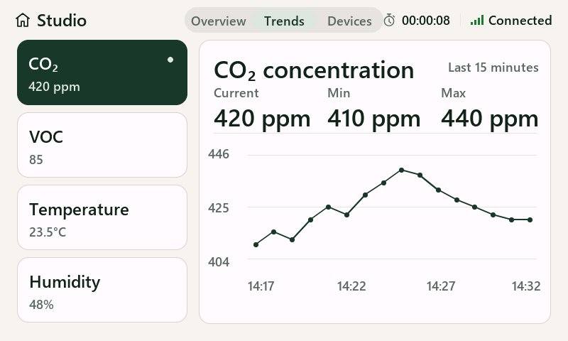
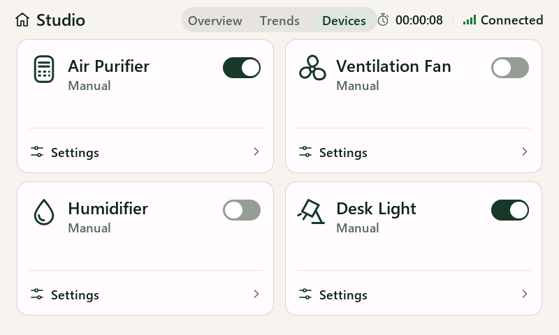
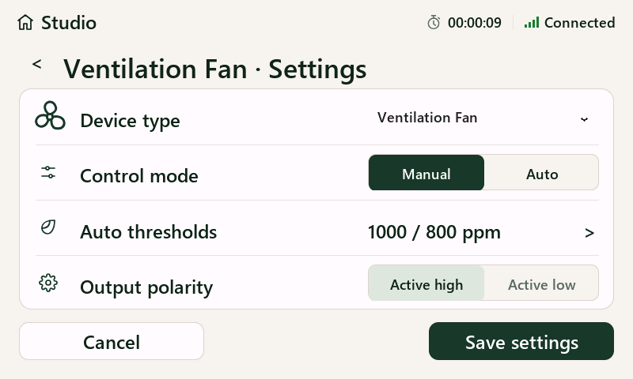
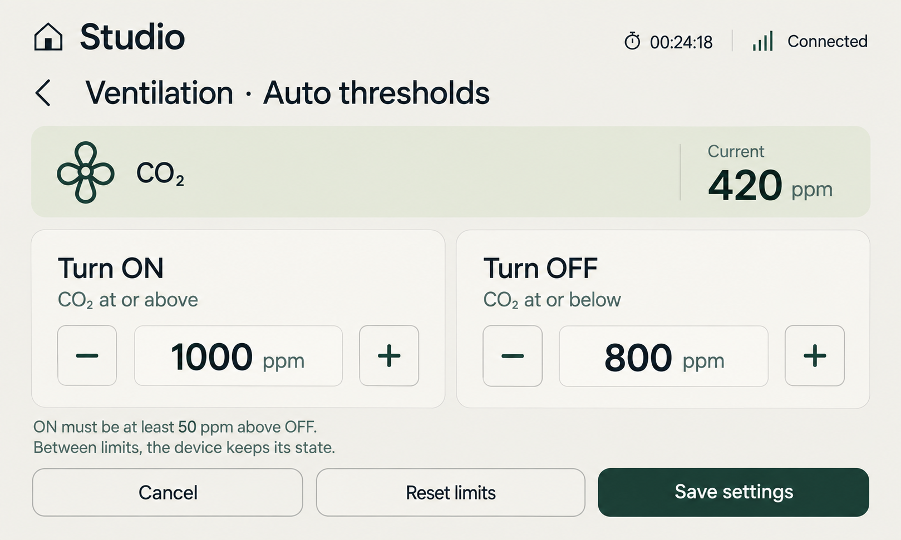
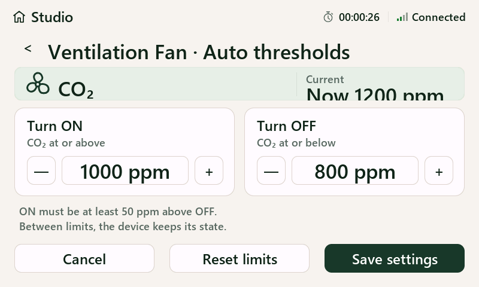
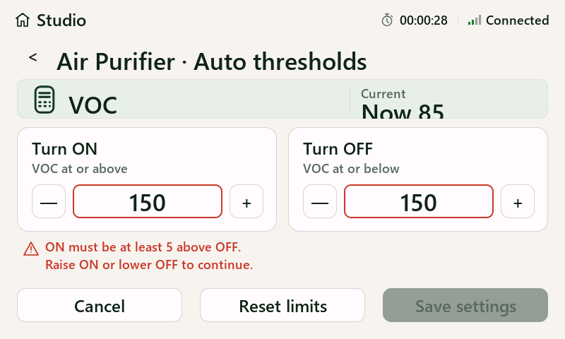

R2: approved reference versus fresh native output
Changes required,2026-09-18.
Findings · Single fix handoff.
Both images use the same5:3 frame. Reference is above actual on narrow windows.
Illustrative readings/modes are not reasons to change production defaults.
Overview
Wrong one-row shell, equal columns and tall environmental tiles; icons and hierarchy still differ.
Approved concept — normalized Actual LVGL800×480
Actual LVGL800×480
Trends
Wrong rail ratio; missing sensor icons, weak selector readings and crowded same-size units.
Approved concept — normalized Actual LVGL800×480
Actual LVGL800×480
Devices
Card proportions/empty space, silhouettes and Settings-row scale differ. Modes are not matched fixtures.
Approved concept — normalized Actual LVGL800×480
Actual LVGL800×480
Settings
Dropdown outline/chevron and icon scale differ; selected mode is not matched.
Approved concept — normalized Actual LVGL800×480
Actual LVGL800×480
Auto CO2
Live reading is clipped. Strip height and number/unit/stepper hierarchy differ.
Approved concept — normalized
Actual LVGL800×480
Auto humidity
Live reading clipped; compare full-width strip and internal card baselines.
Approved concept — normalized Actual LVGL800×480
Actual LVGL800×480
Invalid VOC
VOC150/150 is now matched; live reading still clipped and reference icon family absent.
Approved concept — normalized Actual LVGL800×480
Actual LVGL800×480
Confirmed non-nominal defects
CO2/unit overlap, clipped Auto paused, timer hidden when offline, toast covers shortcut:
home_poor
home_auto_paused_switch
home_offline
home_relay_retry